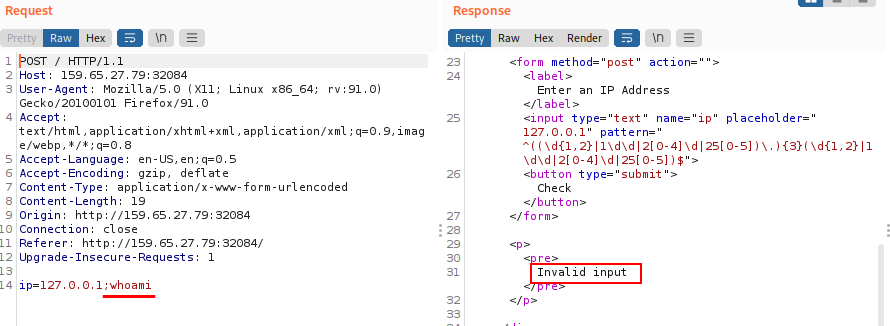

Identify WAF & WebApp Filters
Filter/WAF Detection
•
Filter Detection If our request is
displayed in the same page of the request, means that probably it was
detected and prevented by the PHP web application itself If when we try to inject a message we get an error message (example: Invalid Input) means that something has triggered a security mechanism in place that denied our request.
•
WAF Detection
If the error message is
displayed a different page, with information like our IP and our request, this
may indicate that it was denied by a WAF